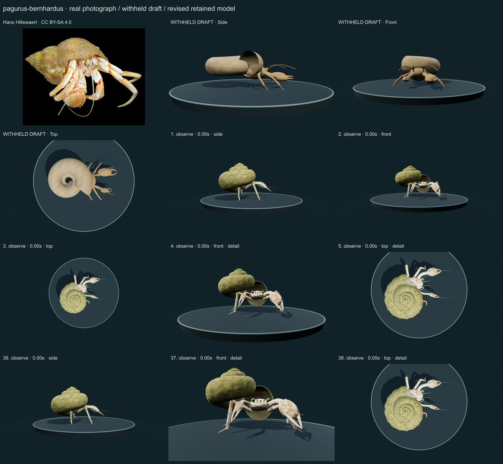
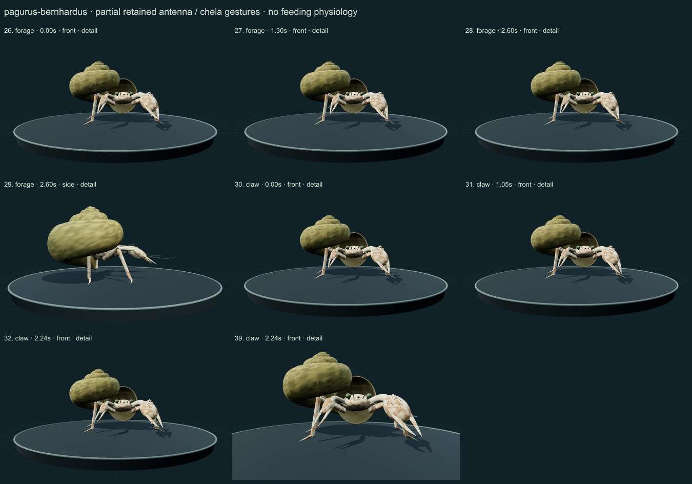
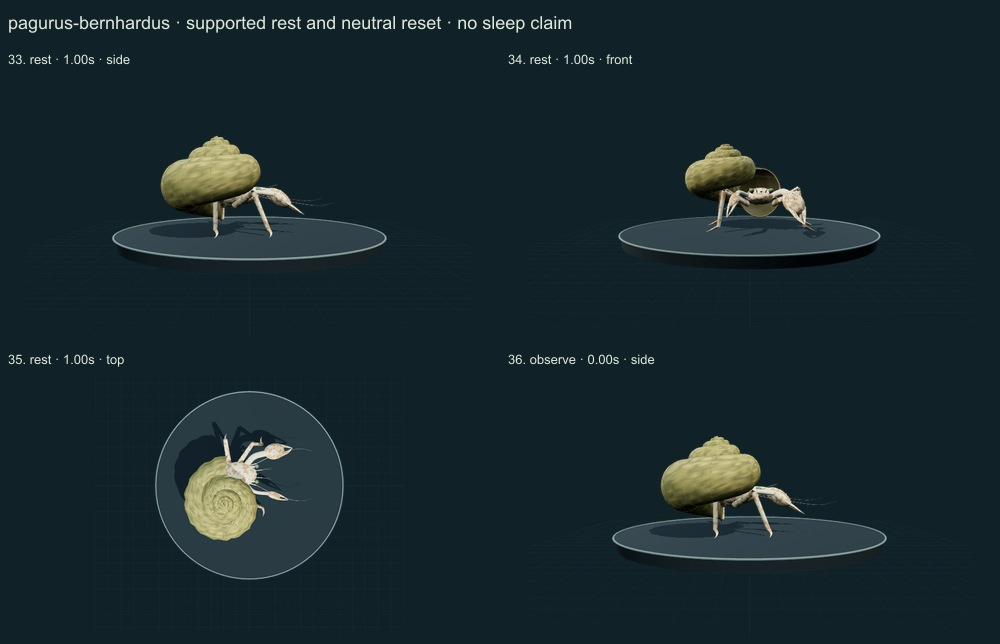
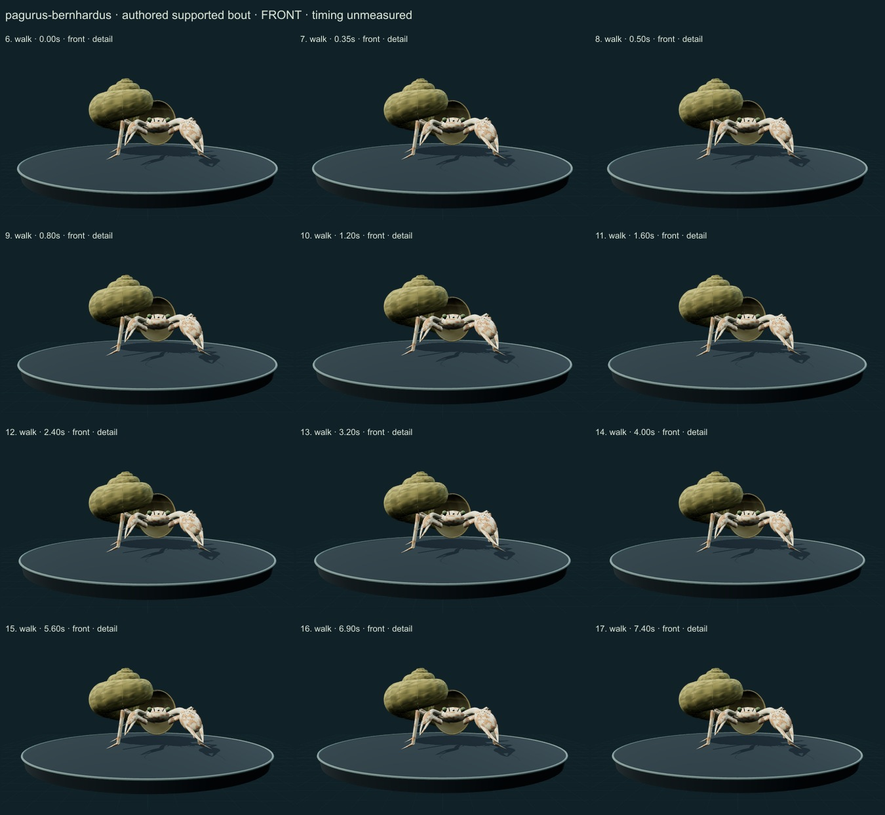
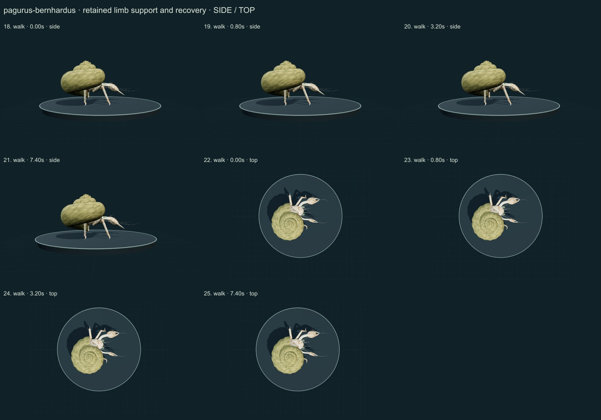

PhenoVoxel Archive · v0.6.22 · October 25, 2026
Common hermit crab
This release reaches 270 records after verified publication. 30 saved drafts remain held; 280 remain to 550, including 250 without saved drafts. Release register.
Authentic Hans Hillewaert CC BY-SA4.0 photo compared with selected actual Ulster Museum/Habitas species diagnosis and Ege etal2025 Figure2 right/left chela contours. Primary selected HTML abstract/methods and actual linked figure were accessible; a direct local PDF request returned HTML and is not claimed as read. Chapple2012 walking context is a related Pagurus species and not a measured P.bernhardus gait.
Hans Hillewaert · CC BY-SA 4.0. Authentic Hans Hillewaert CC BY-SA4.0 photo source labels Pagurus bernhardus. The selected cream/orange cuticle and occupied shell guide appearance; sex/stage, allometry and the gastropod-shell taxon are not independently redetermined. Resized inside 1000 px, flattened and JPEG encoded; no generative alteration.
Exact creators, licenses, source/download/local checksums and access scopes remain in the data. Primary figures are linked, not redistributed.
Original short anterior shield, short ocular stalks, larger right granular chela and smaller left chela replace an undifferentiated draft. Four principal walking limbs are distinct from reduced P4/P5 shell-support cues. A partial soft curled pleon is enclosed by an open helicospiral shelter of undetermined gastropod taxon; that shell is not counted as another species.
Selected cream/orange mottled cuticle with seated granule/spinule cues and greenish eye ends follows the authentic reference qualitatively. The original numeric shell has continuous whorls, a lip, inner wall and subdued worn pigment. No source photo pixels or measured material calibration are used.
Remaining: Still partly stylized: the eye region and mouthparts are simplified, limb segmentation and exact claw allometry are unmeasured, some shell-opening/body relationships remain schematic and shell support/load is not solved. The illustrative shell does not reconstruct the reference individual's identified gastropod species, handedness or dimensions. No independent biological validation or measured gait/physiology.
The retained four principal limbs perform a short authored supported bout with fixed segment lengths, planted-toe support/recovery and stopping. Unequal fingers and antennae articulate locally; quiet rest retains the shell and body. Full withdrawal, shell closure, shell choice, food handling/contact and shell-load dynamics remain unavailable.
Partly stylized original educational reconstructions. Proportions, natural cuticle optics, biological timing, forces, food contact, sensing and physiology are incomplete or unmeasured. No independent specialist validation, scientific certification or accuracy percentage. Software checks and screenshots are not empirical validation.
39 actual nonblank final viewer states individually inspected on 5 labelled sheets. Neutral full-organism and enlarged diagnostic views distinguished. Qualitative author assessment, not independent scientist certification.





Partly stylized original educational reconstructions. Proportions, natural cuticle optics, biological timing, forces, food contact, sensing and physiology are incomplete or unmeasured. No independent specialist validation, scientific certification or accuracy percentage. Software checks and screenshots are not empirical validation. Prior 267 species objects and original wolf/tiger meshes are unchanged. Legacy Protista/Monera reporting categories are not monophyletic kingdoms. Occurrence records are not native-range boundaries.
Exact findings, sources and screenshot hashes